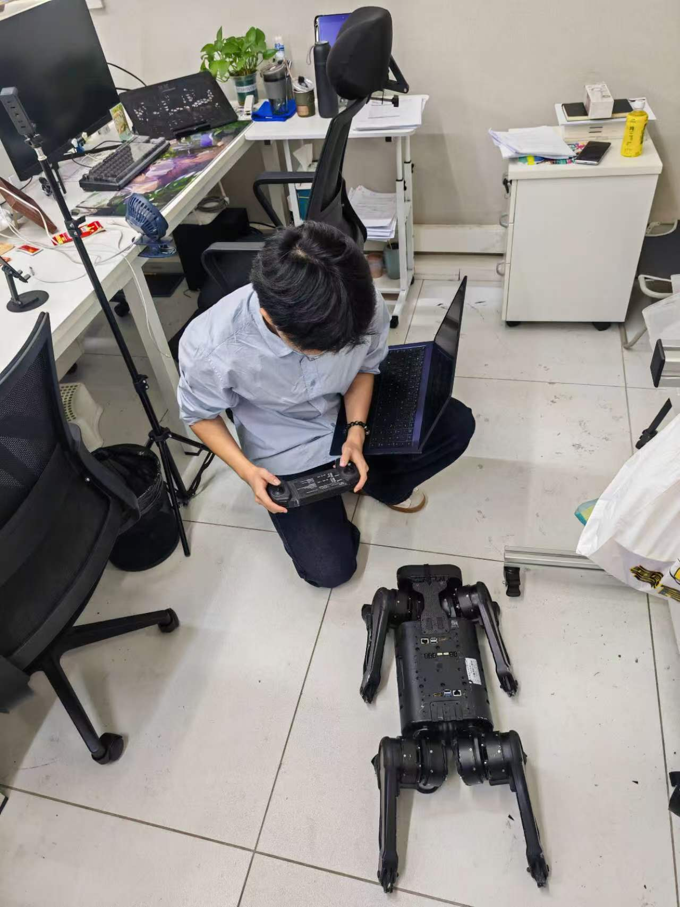
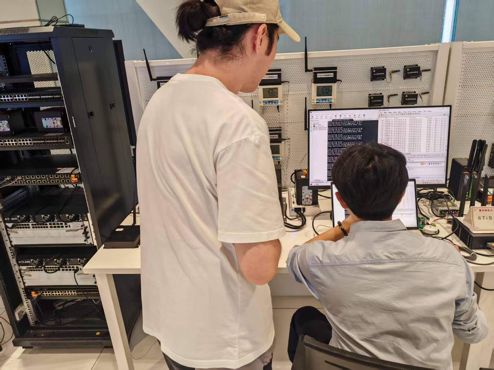
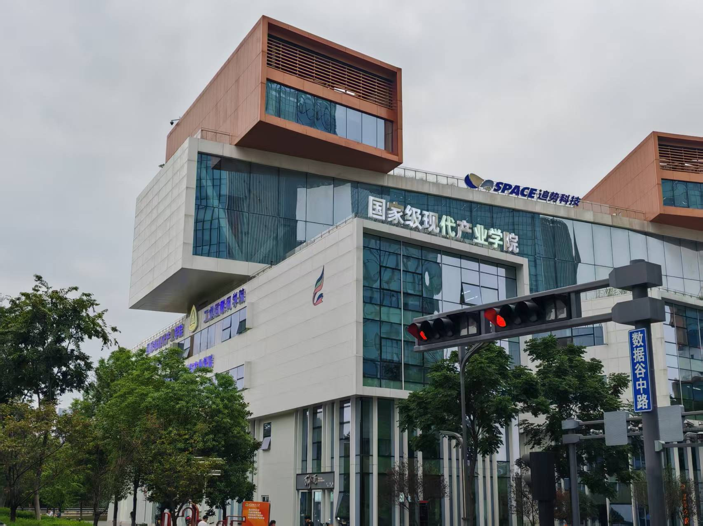

语言与任务理解
研究开放式人类意图如何被澄清、约束，并与环境中的真实对象建立可靠对应。
VERBAL-TO-EMBODIED
REASONING AND ACTION
从语言理解走向真实行动。
我们是一支面向具身智能的学生创新研究团队。
VERA 关注自然语言、任务推理、机器人感知与安全执行之间的连接。系统不是终点，而是我们验证研究问题的一种方式。
研究开放式人类意图如何被澄清、约束，并与环境中的真实对象建立可靠对应。
把目标转化为能够被机器人执行的步骤，让策略生成接受环境、安全和能力边界的共同约束。
关注执行前检查、过程监测、结果取证以及失败后的有限修复，使行动过程可以被复核。
SELECTED OUTCOMES
围绕机械臂、传感器与任务环境开展具身执行研究，持续验证从指令理解到动作反馈的完整链路。

通过设备连接、遥操作与现场观察，记录算法假设与机器人实际表现之间的差异。

从模块接口到完整流程，团队共同完成联调、记录和复核，并明确区分仿真、测试与真实环境结论。
RESEARCH IN PROGRESS
01 / 04
成员按姓名拼音顺序排列
Members listed alphabetically by Pinyin
Wang Yihang
Guo Jiateng
Li Hanxiang
Liu Ke
Sun Ruolin
Tang Ruoming
Wang Mubai
Zhao Yixin

在校园里提出问题，
在实验中寻找答案。